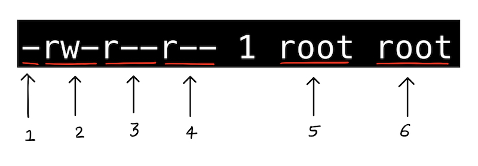
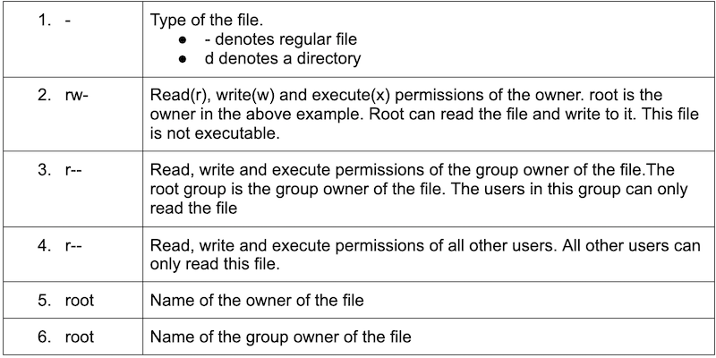
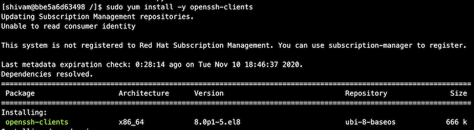
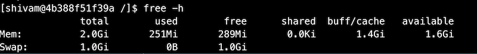

Linux 伺服器管理
在本課程中，我們將嘗試涵蓋 Linux 伺服器管理員常執行的一些常見工作。首先，我們會先了解特定指令的功能，接著透過範例來理解指令。請務必記得，自己實際練習 Linux 指令是非常重要的。
實驗環境設定
-
在您的系統上安裝 Docker - https://docs.docker.com/engine/install/ 或者您可以使用線上的 Docker playground
-
我們將在 Red Hat Enterprise Linux (RHEL) 8 系統上執行所有指令。

- 大部分本章模塊的指令都會在上述 Docker 容器中執行。
多使用者作業系統
作業系統若允許多個人／使用者同時使用同一部電腦，且互不影響對方的檔案和偏好設定，則稱為多使用者作業系統。基於 Linux 的作業系統本質上即為多使用者系統，可讓多個使用者同時登入系統。一般電腦只有一組鍵盤與螢幕，但若連接網路，多個使用者仍可透過 SSH 登入。我們之後會詳細介紹 SSH。
伺服器管理員大多關心的 Linux 伺服器通常是遠端機器，距離我們很遠，我們需要透過像 SSH 的遠端登入方式連線。
因 Linux 支援多使用者，我們需要有機制保護使用者之間的資料安全，避免使用者擅自存取和修改其他使用者的檔案。
使用者／群組管理
-
Linux 中的使用者會附有一個使用者 ID，稱為 UID。
-
使用者也會有一個家目錄和登入 Shell。
-
群組是由一個或多個使用者組成的集合，有助於方便同群組使用者共用權限。
-
每個群組會有一個群組 ID，稱為 GID。
id 指令
id 指令可以查詢使用者所屬的 uid 和 gid，並列出該使用者所屬的群組。
root 使用者的 uid 和 gid 均為 0。

想要知道目前使用者，常用 whoami 指令。

root 使用者又稱超級使用者，擁有系統中最高權限，對所有資源無限制存取。UID 為 0。
相關使用者／群組重要檔案
| 檔案 | 說明 |
|---|---|
| /etc/passwd | 儲存使用者名稱、UID、GID、家目錄、登入 Shell 等 |
| /etc/shadow | 儲存使用者密碼 |
| /etc/group | 儲存系統中不同群組資訊 |


若想了解上述輸出中各欄位的意義，可參考以下連結：
管理使用者的重要指令
管理 Linux 使用者／群組常用指令如下：
useradd- 新增一名使用者passwd- 新增或修改使用者密碼usermod- 修改使用者屬性userdel- 刪除使用者
useradd
useradd 指令於 Linux 中新增使用者。
我們示範建立一名新使用者 shivam，並透過檢視 /etc/passwd 檔案尾端確認使用者已建立。新使用者的 uid 與 gid 均為 1000，家目錄設為 /home/shivam，登入 Shell 為 /bin/bash。可注意，使用者的家目錄與登入 Shell 後續仍可修改。

若未指定家目錄或登入 Shell 等屬性，則會自動使用預設值。也可以在建立使用者時覆寫這些預設值。

passwd
passwd 指令用於設定或修改使用者密碼。
上方範例中，建立使用者 shivam 與 amit 時，並未設定密碼。
!! 出現在 shadow 帳號欄位表示帳號已建立，但尚未設定密碼。

接著示範為使用者 shivam 設定密碼。

請記牢密碼，因後續範例可能會用到。
同時，也示範變更 root 使用者密碼。由一般使用者切換成 root 時，需要輸入 root 密碼；使用 root 登入也會要求密碼。
usermod
usermod 指令用於修改使用者屬性，例如家目錄或 Shell。
示範將使用者 amit 的登入 Shell 變更為 /bin/bash。

同理，可以修改其他屬性。使用 usermod -h 查看可修改屬性列表。
userdel
userdel 指令用於刪除使用者。刪除後，該使用者相關資訊均會被移除。
示範刪除使用者 amit。刪除後，在 /etc/passwd 與 /etc/shadow 檔案中找不到該使用者條目。

管理群組的重要指令
管理群組的指令與管理使用者相似，故此不詳細說明。您可以在系統上練習下列指令。
| 指令 | 功能說明 |
|---|---|
| groupadd <群組名稱> | 建立新群組 |
| groupmod <群組名稱> | 修改群組屬性 |
| groupdel <群組名稱> | 刪除群組 |
| gpasswd <群組名稱> | 修改群組密碼 |

示範將使用者 shivam 加入先前建立的群組。
成為超級使用者
在執行下列指令前，確定您已使用 passwd 指令為使用者 shivam 與 root 設定密碼。
su 指令可切換使用者。示範切換成 shivam 使用者。

接著嘗試查看 /etc/shadow 檔案。

作業系統不允許 shivam 使用者存取 /etc/shadow，此檔非常重要，存放使用者密碼，僅限 root 或具超級使用者權限者可讀。
sudo 指令讓一般使用者可使用 root 權限執行指令。 請記住 root 使用者擁有系統上所有權限。也可使用 su 切換成 root 使用者並讀取該檔案，但須輸入 root 密碼。現代作業系統多用 sudo 方式提升權限，使用者輸入自己的密碼，且需要屬於 sudo 群組。
如何讓其他使用者取得超級使用者權限？
先用 su 指令切換成 root 使用者（需要輸入 root 密碼）。

若忘記設定 root 密碼，可輸入 exit 返回一般使用者，然後使用 passwd 指令設定密碼。
檔案 /etc/sudoers 記錄允許使用 sudo 的使用者清單。 在 Red Hat 系統中，預設並無此檔，需要安裝 sudo 軟體包。

後續會詳細說明 yum 指令。
嘗試開啟 /etc/sudoers，裡面含有許多規則，例如 root 可從任何位置執行任何指令。

給予使用者 root 權限的簡單方法是將其加入擁有全部權限執行指令的群組。wheel 是 Red Hat Linux 中具有此權限的群組。

將使用者 shivam 加入 wheel 群組，以賦予 sudo 權限。

切換回使用者 shivam，嘗試讀取 /etc/shadow。

此時需以 sudo 執行指令才能存取該檔案，因為只有具備 sudo 權限的使用者才能存取。剛剛已將 shivam 加入 wheel 群組，獲得此權限。
檔案權限
Linux 作業系統中，每個檔案或目錄均有屬於檔案擁有者、同群組使用者與其他人的存取權限，確保使用者間權限隔離。
可使用 ls 指令查看檔案權限。以下檢視 /etc/passwd 檔案權限。

以下說明輸出中與檔案權限相關的重要欄位。


Chmod 指令
chmod 指令用於修改檔案與目錄權限。
權限通常以數字方式指定，可以將權限視為一組位元，1 表示允許，0 表示禁止。
| 權限說明 | rwx 權限 | 二進位 | 十進位 |
|---|---|---|---|
| 讀寫執行 | rwx | 111 | 7 |
| 讀寫 | rw- | 110 | 6 |
| 讀執行 | r-x | 101 | 5 |
| 僅讀 | r-- | 100 | 4 |
| 寫執行 | -wx | 011 | 3 |
| 僅寫 | -w- | 010 | 2 |
| 僅執行 | --x | 001 | 1 |
| 無權限 | --- | 000 | 0 |
示範建立新檔案並查看其權限。

群組所有者無寫入權限。使用 chmod 給予群組所有者（root）寫入權限。

chmod 也可用來調整目錄權限，方法相同。
Chown 指令
chown 指令用於更改檔案或目錄的擁有者。
指令語法：chown <新擁有者> <檔案名稱>
若無 sudo 權限，需加上 sudo 指令執行。 示範切換成 shivam 使用者，嘗試更改檔案擁有者。事先已將該檔擁有者改為 root。
chown 亦可用於目錄所有者更改，使用方式相同。
Chgrp 指令
chgrp 指令用來更改檔案或目錄的群組擁有權，語法與 chown 類似。
同樣可用於目錄群組更改。
SSH 指令
ssh 指令用於遠端登入系統、系統間傳輸檔案以及在遠端主機執行指令。SSH 全名為 secure shell，提供兩台主機之間加密安全的連線，適用於不安全網路如網際網路。
參考：https://www.ssh.com/ssh/command/
接著介紹免密碼認證，為 SSH 認證中安全且最常用方式。
使用 SSH 免密碼認證
此法可在 SSH 登入時不需輸入密碼。適合腳本自動執行 SSH 任務。
免密碼認證使用公私鑰配對。公鑰可分享，私鑰必須保密。
此處不深入認證原理，可參考
https://www.digitalocean.com/community/tutorials/understanding-the-ssh-encryption-and-connection-process
設定 SSH 免密碼認證步驟：
-
產生公私鑰對
若 ~/.ssh 目錄已有鑰匙對，無需再產生。
安裝包含 ssh 指令的
openssh套件。
使用
ssh-keygen指令產生鑰匙對，提示可採預設值。執行完
ssh-keygen成功，可在 ~/.ssh 目錄看到兩把鑰匙：
id_rsa（私鑰）與id_rsa.pub（公鑰）。注意私鑰僅能由您讀取和修改。
-
將公鑰傳輸到遠端主機
傳輸公鑰有多種方式，以下示範常用的
ssh-copy-id指令。
安裝
openssh-clients套件以使用ssh-copy-id。
使用
ssh-copy-id將您的公鑰複製至遠端主機。
以密碼認證方式 SSH 登入遠端主機。
現在您的公鑰應已寫入遠端主機的
~/.ssh/authorized_keys。
~/.ssh/authorized_keys儲存允許 SSH 存取的公鑰清單。
如何在遠端主機執行指令？
格式：
ssh <使用者>@<主機名稱或 IP> <指令>

如何從一台主機傳送檔案至另一台主機？
格式：
scp <來源> <目的地>

套件管理
套件管理是指安裝與維護系統軟體的過程。Linux 發行版通常由套件發行者提供所需軟體。不同發行版使用不同套件系統。
| 套件系統 | 發行版範例 |
|---|---|
Debian 風格 (.deb) |
Debian、Ubuntu |
Red Hat 風格 (.rpm) |
Fedora、CentOS、Red Hat Enterprise Linux |
Linux 中常見的套件管理指令
| 指令 | 功能說明 |
|---|---|
| yum install <套件名稱> | 安裝套件 |
| yum update <套件名稱> | 將套件更新至最新版 |
| yum remove <套件名稱> | 移除套件 |
| yum search <關鍵字> | 搜尋套件 |
DNF 是 YUM 的後繼者，目前 Fedora 以 DNF 管理套件，將來有望取代所有 RPM 基礎的 Linux 發行版的 YUM。

搜尋 httpd 關鍵字有找到相符套件。接下來安裝 httpd。

安裝完後，使用 yum remove 指令移除 httpd 套件。

程序管理
本節介紹一些用於監控 Linux 程序的重要指令。
ps（process status）
ps 指令可取得進程資訊或列出進程列表。

若執行 ps 出現「ps command not found」錯誤，請安裝 procps 套件。
單獨執行 ps 不太實用，下方範例用 ps aux 列出系統中所有進程。
參考：https://unix.stackexchange.com/questions/106847/what-does-aux-mean-in-ps-aux

也可以加上進程號 PID 參數，查詢特定進程資訊。

搭配 grep 可以精確搜尋特定進程。

top
top 指令可即時顯示系統中執行之程序資訊及系統狀態摘要。

對每個程序，top 列出進程 ID、擁有者、優先度、狀態、CPU 與記憶體使用率等等資訊，同時也列出整體記憶體、CPU 使用情況及系統上線時間與負載平均。
記憶體管理
本節介紹一些可用來檢視系統記憶體資訊的重要指令。
free
free 指令用於顯示系統記憶體使用狀況，包括 RAM 總用量、空閒、及快取／緩衝區所佔用空間。

預設以 KB 為單位。加上參數可顯示易讀格式。

vmstat
vmstat 可用於顯示記憶體外，還有 IO、CPU 等使用狀況。

檢查磁碟空間
本節介紹一些可用於檢視 Linux 磁碟空間的指令。
df（disk free）
df 指令顯示每個掛載的檔案系統的總容量、已用及可用空間。

du（disk usage）
du 指令用於顯示檔案或目錄的磁碟使用量。

下方範例合計列出 / 根目錄下最大的前 5 個目錄。

Daemons
背景執行的程式稱為 daemon（守護程序）。傳統上，daemon 程序名稱會以 d 為結尾，例如 sshd、httpd。daemon 無法直接互動，因為它們在背景執行。
服務（Service）與 daemon 經常等同使用。
Systemd
systemd 是 Linux 作業系統的系統與服務管理程式。systemd 的單元（unit）是其構成基礎，由單元設定檔表示。
下方範例顯示位於 /usr/lib/systemd/system 目錄的單元設定檔，這些由已安裝的 RPM 套件提供。其中 ending with .service 的是服務單元。

管理系統服務
服務單元以 .service 為副檔名。透過 systemctl 可啟動、停止、重啟服務。
| 指令 | 功能說明 |
|---|---|
| systemctl start name.service | 啟動服務 |
| systemctl stop name.service | 停止服務 |
| systemctl restart name.service | 重啟服務 |
| systemctl status name.service | 查看服務狀態 |
| systemctl reload name.service | 重新加載服務設定 |
日誌
本節介紹 Linux 中系統與應用程式常用的日誌檔案與目錄，對系統故障排除非常有用。